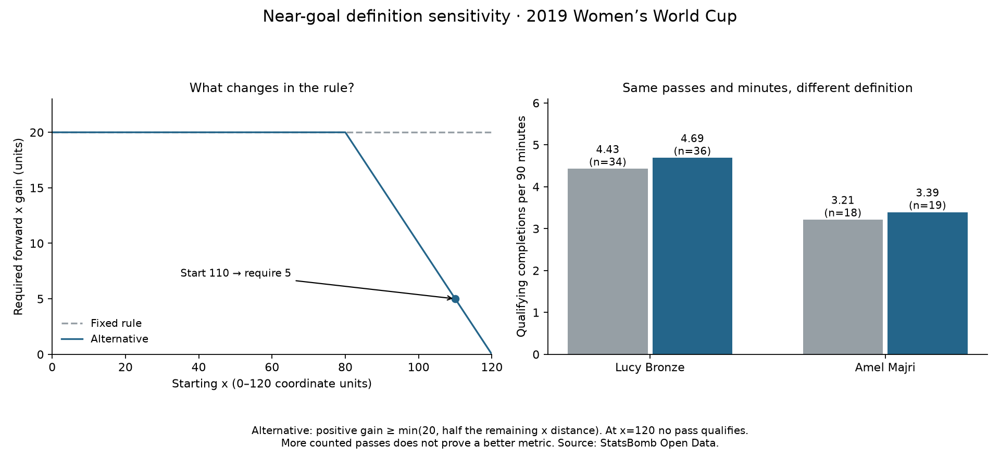

Football analyst training · Recruitment phase · Lesson 68
A smaller requirement near goal.
Read: Soccermatics Lesson 3 — Statistical scouting → Context: what to measure.
You suggested conditional rules for situations near goal. We implemented an alternative and compared it with the original definition on exactly the same passes.
The new calculation
forward_gain = end_x - start_x remaining = 120 - start_x required_gain = min(20, remaining / 2) counts = forward_gain > 0 and forward_gain >= required_gain
min chooses the smaller number. This keeps the requirement at 20 through x=80 and lowers it nearer goal. At x=110, only 10 units remain, so half is five. A completed pass to x=115 now counts.
A pass still needs positive forward gain. A sideways or backward pass does not count. At x=120, no positive in-pitch gain is possible.
The completed comparison
- Bronze: original 34 → alternative 36 (4.43 → 4.69 per 90).
- Majri: original 18 → alternative 19 (3.21 → 3.39 per 90).
- Across all 35 players: 488 → 534, adding 46 passes.

An actual Majri example
Start x=106.9 → end x=114.8 Gain = 7.9 Half of the remaining 13.1 = 6.55 Original rule: needs 20 → does not count Alternative: needs 6.55 → counts
One half is our chosen setting, not an optimized standard. Both definitions ignore defenders, pressure and passing options; the alternative can count tiny gains very close to goal. No independent pass-value labels or new model were used to establish accuracy.
Practice: the count increased. Does that prove we measured player quality more accurately?
No. It proves that a different rule includes more recorded actions. Establishing football value needs independent evidence, context and review.
Run 68_adaptive_forward_advancement.py in Spyder. Read the 35-player comparison and alternative definition. Original lesson files remain unchanged. This worked assignment was assisted; ask your teacher about any unclear condition.